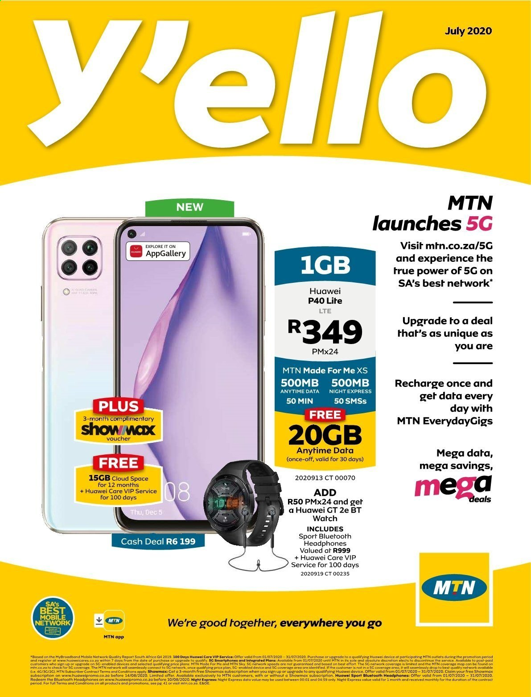
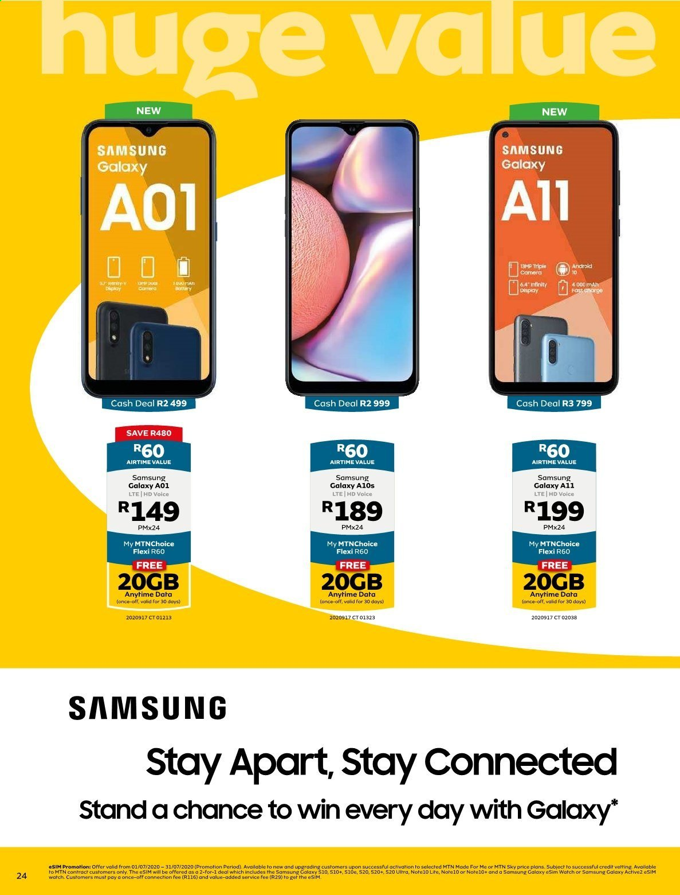
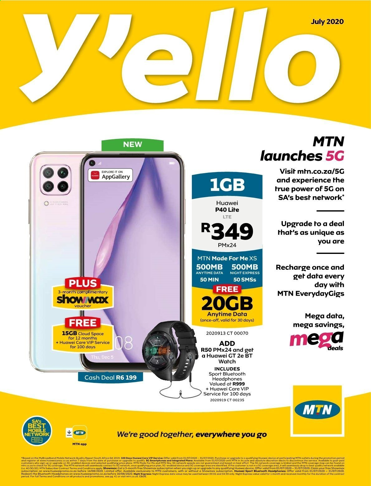
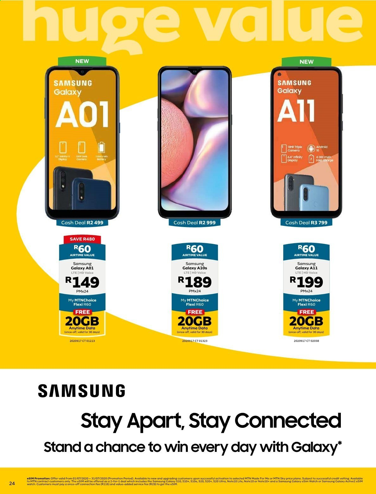

MTN
The company was founded in 1994 as M-Cell with assistance from the South African government. In 1995, it replaced its then-CEO, John Beck, with Robert (Bob) Chaphe. In 2001, the company reported that its controlling shareholder was Johnnic Holdings, and the chairperson was Irene Charnley. In 2002, Phuthuma Nhleko became the CEO,[9] replacing then-CEO Paul Edwards, who had invested in expansion to Nigeria
MTN's competitors in South Africa include Vodacom, Cell C and Telkom Mobile.In May 2008, Bharti Airtel, an India-based telecommunications company, explored the possibility of buying MTN Group. Reliance Communications was also in talks with MTN for a "potential combination of their businesses". In July, the two companies ended discussions regarding the merger.
In June 2008, MTN Group agreed to purchase Verizon Business South Africa, which was a provider of data services to customers in South Africa and four other African countries. The acquisition was completed on 28 February 2009.
On 26 June 2009, MTN Group's subsidiary merged with Belgacom International Carrier Services (BICS), a subsidiary of Belgacom.[17] The combined subsidiary functioned as the international gateway for carrier services of MTN.
In October 2012, MTN announced a partnership with Afrihost to provide DSL Broadband services in Africa.
 


